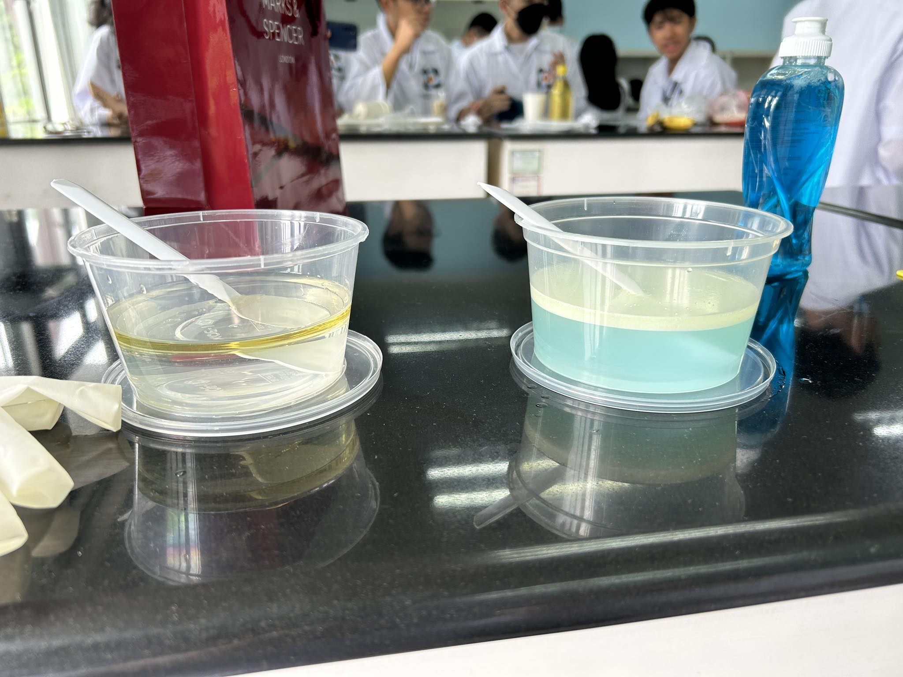
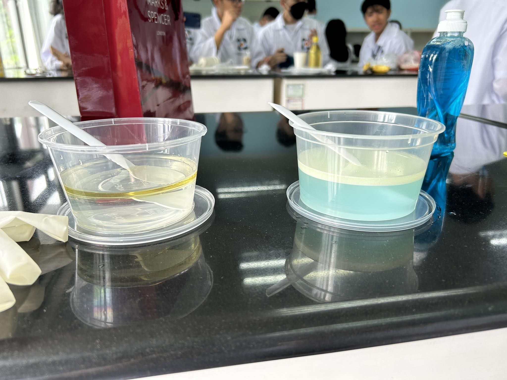

Understanding the digestive system is important because this is the process where our body gains nutrients from food and drinks so that we can stay healthy. The digestive system, made up of different series of organs that allows our body to get nutrients and energy from the food we eat, is responsible for the digestion of food, absorption of nutrients and the elimination of solid food waste.
STAGES OF FOOD CRUSHING
Crushing Stage
The zip-locked bag representing the stomach contains a mixture of bananas and crackers, representing the ingestion of food, and orange juice is added to simulate the addition of digestive acids in the stomach. Next, the bag is crushed to simulate the mechanical action of the stomach crushing the food during the process of digestion. Salivary amylase, an enzyme present in saliva, represented by the water, is added to simulate the action of digestive enzymes in the stomach. The possible biomolecule components of the food inside include carbohydrates, protein, lipids, and nucleic acids.
Transfer Stage
The process in the small intestine is the process being simulated by the liquid flowing out of the stocking. The small intestine's function is to transfer the nutrients and minerals into the bloodstream/body and to also absorb most of the water/fluids that we consume. In this case, the stocking represents the small intestine, which filters the liquid part from the solid part which is the mushed food. The liquid that flowed out of the stocking are the nutrients and water ‘absorbed’ by the stocking.
The tray represents the body, in which the nutrients and water (the liquid) are left after being filtered by the small intestine or the "stocking" in this case.
What's left in the stocking after the liquid has passed through are the solid contents of the stool.
The feces leaving the anus through the sphincter is being represented by pushing the partially solidified content in the two cups.
Simulation of Absorption

Paper Towel with One Fold
The paper towel with the most folds is the one that absorbs the most water; this is because folding a paper towel increases its surface area, which improves its ability to absorb water. By doing this, the paper towel makes spaces in the towel, which allows it to absorb more water than a flat, unfolded towel would. Consequently, the paper towel that has the most folds will be able to hold the most water.
The organ in the digestive system that can be compared to a paper towel is the villi in the small intestine. Similarly to how a paper towel absorbs water, the walls of the small intestine, lined with thousands of tiny finger-like projections called villi, absorbs nutrients from the foods we eat. The small intestine's ability to absorb nutrients efficiently is made possible by the combination of its thin walls, villi, and digesting enzymes.
Simulation of Bile Action
 

The liver produces bile, which is kept in the gallbladder. Bile's main purpose is to aid in the breakdown of lipids in the intestines since it includes the digestive enzymes required to reduce fats into smaller pieces. Furthermore, bile also aids in the body's elimination of waste materials. Bile is an essential component in the chemical digestion of carbohydrates, proteins, and fats.
Conclusion
In this simulation of the digestive system, we could see and understand the digestive process using materials and procedures that represent the different organs, products, and stages in the digestive system. The water represents salivary amylase, the orange juice, the acid in the stomach, the bananas and crackers, food, and the Ziploc bag, the stomach. These materials were used to represent the crushing stage of food processing. The stocking, the tray, the liquid, and the leftover contents in the stocking were used to represent the absorption of nutrients in the small intestine and the elimination of stool from the anus in the transfer stage of food processing. In the simulation of absorption, the paper towel which was folded was used to show how the increased surface area because of the villi in the small intestine helps absorb more nutrients. In the simulation of bile action, bile is produced by the liver and is stored in the gall bladder. It is involved in chemical digestion and aids in the breakdown of lipids in the intestines and the body’s elimination of waste materials.